언어 · 개발 환경
C++
Python
Linux
Git
MATLAB
Simulink
01 · ABOUT / 본인소개
학부에서 MCU·CAN 통신, ROS 기반 드론·배달로봇, 영상처리·Lip Reading 프로젝트를 수행했습니다. 센서와 제어, 인식 모델을 연결하며 하드웨어와 소프트웨어를 함께 다뤘습니다.
졸업 후에는 운영 업무를 위한 웹·앱 프로젝트로 경험을 넓혔습니다. 이 경험을 바탕으로 임베디드 개발, 로봇 소프트웨어, AI 응용 개발 분야에 지원하고자 합니다.
교내 대상 2회 · WE-Meet 최우수상 1회
팀 프로젝트 수상
대표 3 · 추가 학부 4 · 졸업 후 2
웹·앱은 제품별 한 묶음으로 집계
02 · TECH STACK
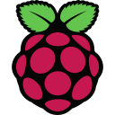
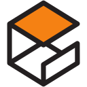
이 분류의 점은 AI 도구를 활용해 구현하고 개선하는 역량을 뜻하며, AI 도움 없이 수작업으로 코딩하는 능력을 뜻하지 않습니다.
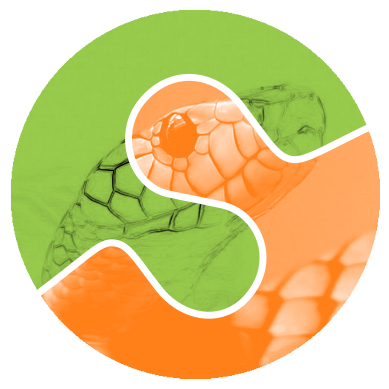
03 · FEATURED PROJECTS
팀의 결과, 직접 맡은 일, 남은 한계를 구분했습니다.
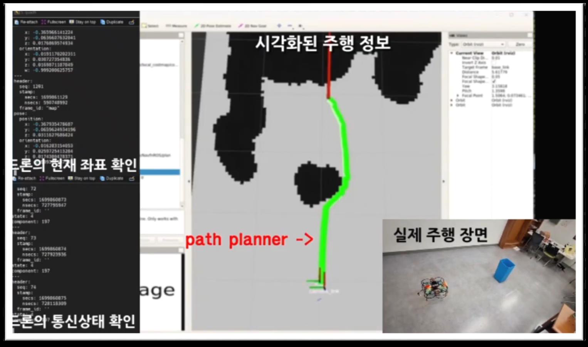
경로 계획 · 실내 비행 기록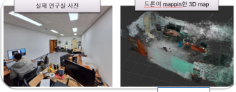
실제 연구실 · 3D 매핑T265·D435i 카메라 2종과 Jetson Nano·Pixhawk 4를 연동해, GPS 없이 단순 실내 환경에서 목표 비행을 확인했습니다.
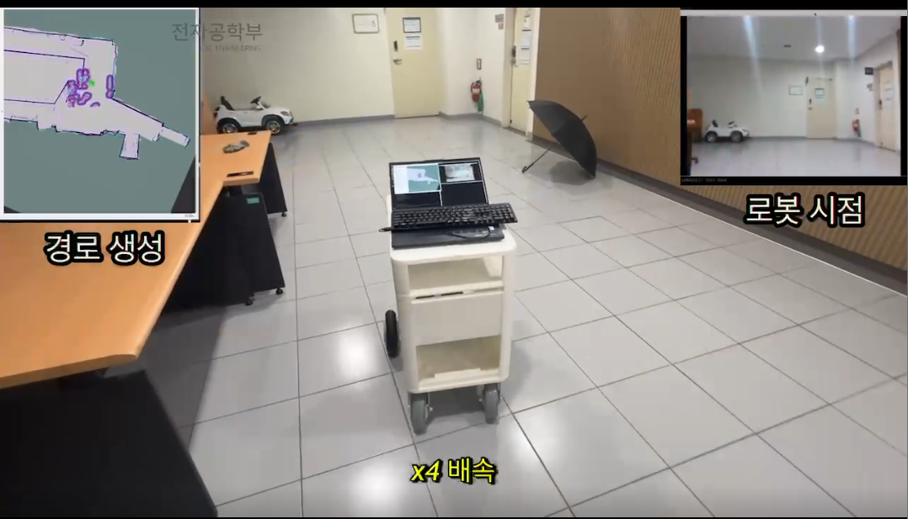
실내 주행 · 경로 생성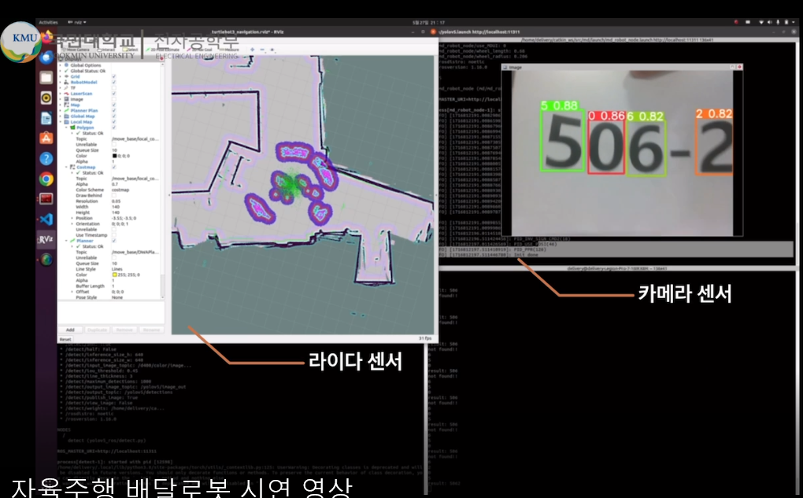
라이다 지도 · 호실 번호 인식호실 번호 인식에서 목적지 도착까지. 건물 안에서 방을 찾는 수고를 줄이기 위한 배달로봇입니다.
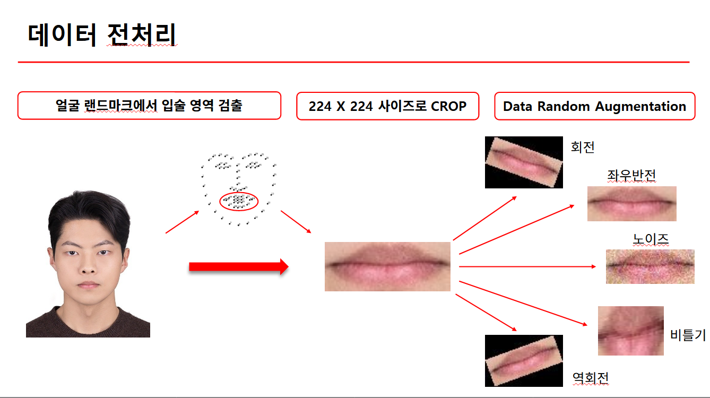
입술 영역 검출 · 데이터 전처리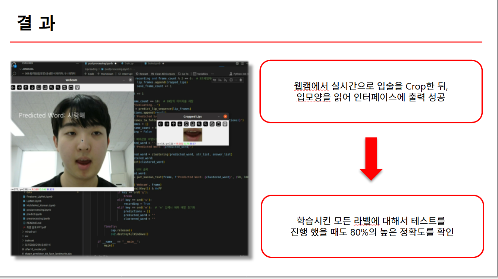
실시간 시연 · 원본 결과 자료224×224 입술 영상 10프레임으로 12개 음절을 분류하고, 사전 정의 단어 후보로 연결했습니다.
MORE PROJECTS
학부의 임베디드·영상처리 실습부터 졸업 후 운영 웹·앱까지.
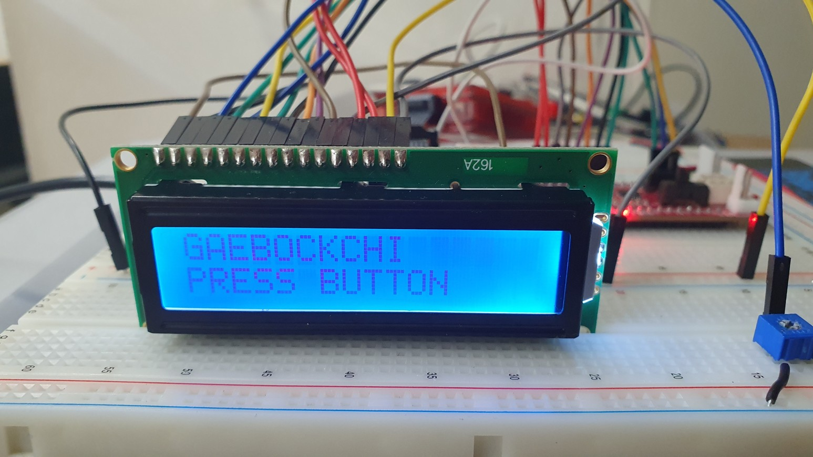
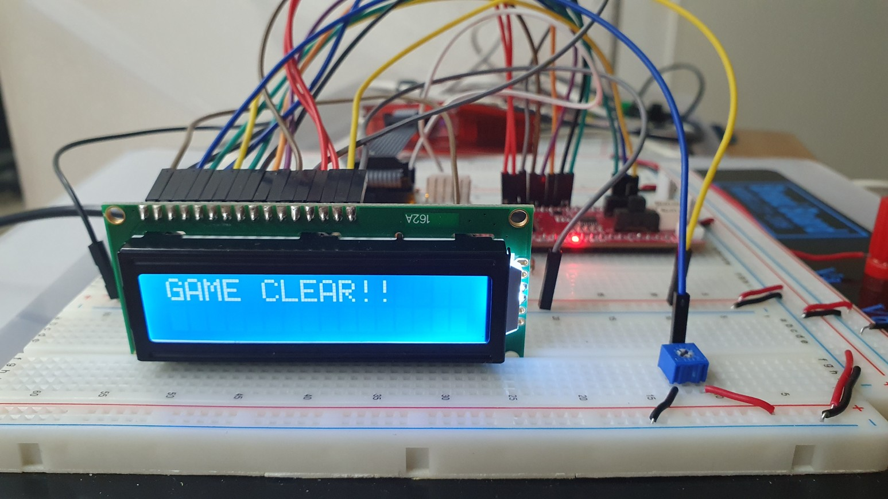
마이크로프로세서응용공학
조도센서와 CLCD를 연결해 캐릭터의 배고픔·스트레스를 관리하는 게임을 팀으로 구현했습니다.
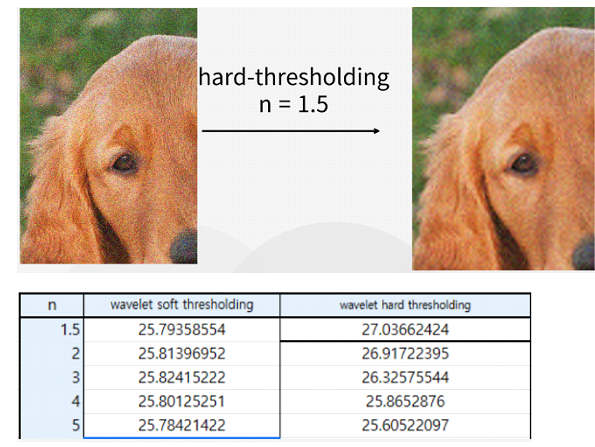
공학설계
주파수 영역 노이즈 제거를 담당했습니다. FFT 기반 필터와 팀의 웨이블릿 등 여러 방법을 PSNR로 비교했습니다.
//랜덤 256bit N 생성
BIGNUM *random_number = BN_new();
BN_rand(random_number,256,-1,0);
//c_trans1 생성
json_object *c_trans1 =
json_object_new_object();암호학
C와 OpenSSL로 암호화 통신의 핸드셰이크 흐름을 구현한 교과 프로젝트입니다.
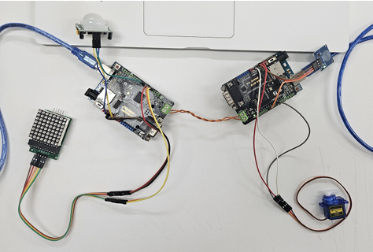
차량용통신
Arduino를 이용해 CAN 통신을 구현하며 차량용 통신의 메시지 송수신을 실습했습니다.
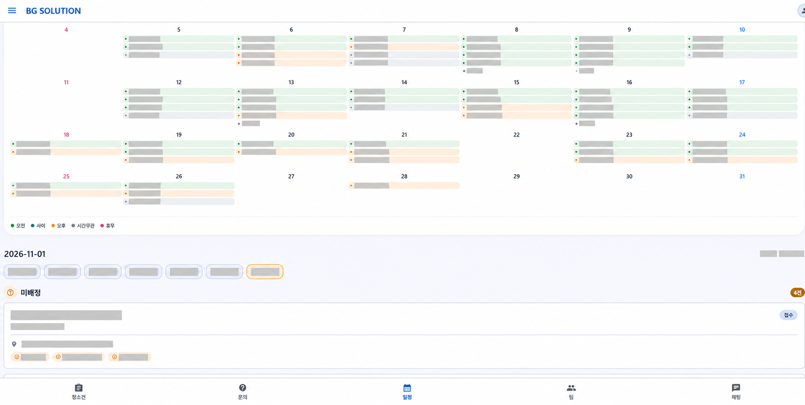
운영 도구 · APP & WEB
청소 배정·현장 완료보고 앱과 업체 홈페이지를 구성한 웹·앱 프로젝트입니다.
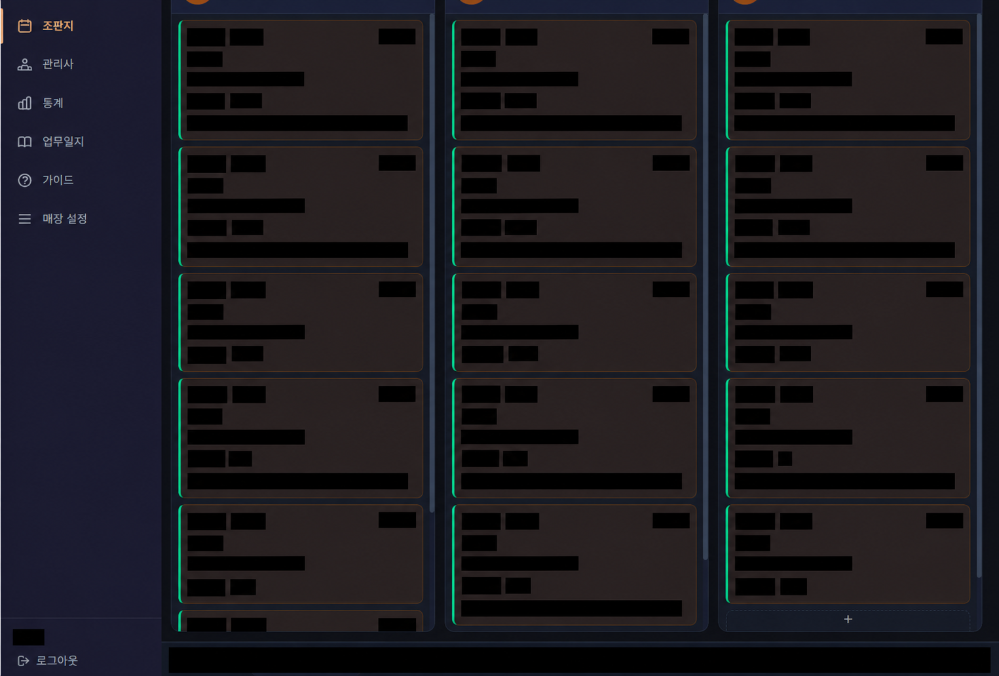
매장 관리 · WEB & APP
예약·고객 정보와 직원별 일정, 업무 현황을 관리하는 매장 운영 웹·앱 프로젝트입니다.
구성 흐름과 구현 기능은 각 저장소 문서를 기준으로 정리했습니다. 화면의 개인정보·운영 정보는 가렸습니다. 단독 개발이나 업무 시간 절감 성과를 의미하지 않습니다.
04 · PROBLEM SOLVING
관찰한 현상과 실제로 조정한 내용을 중심으로 정리했습니다.
#01 / 배달로봇 · 모터 제어
#02 / 배달로봇 · 위치 추정
#03 / Lip Reading · 데이터
#04 / 매장 웹 · 조회·저장 흐름
로봇 속도·위치 오차와 입술 검출률은 동일 조건의 전후 측정 기록이 없어 개선율을 표시하지 않았습니다.
05 · ARCHIVE
프로젝트를 뒷받침하는 코드, 영상, 문서를 모았습니다.
CODE
공개 프로필 · maze4995
공개 개발 중 스냅샷 · 최종 코드 전체와 일치 여부 미확인
DEMO
YouTube · 사전 촬영 비행 기록
Google Drive · 큰 숫자 종이를 사용한 시연
DOCUMENT
Google Drive · PDF
Google Drive · 슬라이드
Google Drive · PDF
Google Drive · 슬라이드
외부 자료는 새 탭으로 열립니다. Google Drive 자료는 원본 권한에 따라 로그인이 필요할 수 있습니다.
06 · AWARDS
팀 프로젝트로 함께 이룬 세 번의 수상입니다.
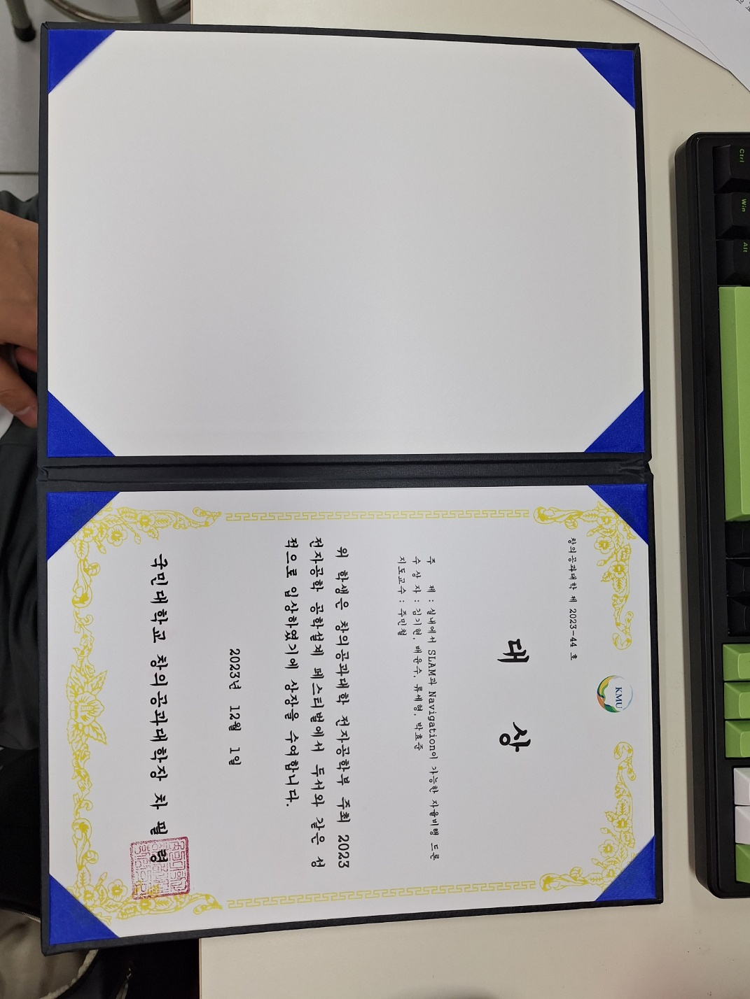
AWARD RECORD
실내 자율비행 드론의 실제 대상 상장입니다. 아래에서 수상별 프로젝트와 공지·증빙을 확인할 수 있습니다.
학교 수상 공지 보기 ↗2023.12.01
국민대학교 · 실내 자율비행 드론 / K-SNDroneTech
2024.06.04
국민대학교 · 자율주행 배달로봇 / NextGen Deep Delivery
팀 프로젝트 수상
07 · EDUCATION
전자공학부 · 학사
학부에서 이어 온 관심
전자공학을 기반으로 로봇 시스템의 센서·제어 연동과 영상 인식을 경험했습니다. 전자공학종합설계에서는 한국어 Lip Reading 시스템을 팀원과 공동으로 수행했습니다.
종합설계 프로젝트 보기 ↗08 · ACTIVITIES
학부 프로젝트를 통해 함께 배우고 결과를 소개한 경험입니다.
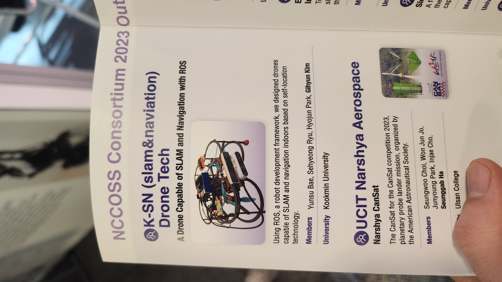
안내책자와 프로젝트 기록을 모았습니다. 부스 현장이나 RC 교육 현장을 촬영한 사진은 아닙니다.
K-SNDroneTech 팀의 드론 프로젝트로 전시에 참여했습니다. 차세대통신 혁신융합대학 컨소시엄의 공동 부스에서 학부 프로젝트 결과를 소개했습니다.
학교 전시 기사 (새 탭)드론 팀에서는 ROS·Linux·MAVROS 자료 조사와 기술 선택을, 새로운 배달로봇 팀에서는 ROS·C++ 학습과 GitHub 협업을 이끌었습니다.
배달로봇 팀에서 맡은 일 ↗09 · CONTACT
임베디드·로봇 소프트웨어·AI 응용 분야를 향한 학습과 프로젝트 기록을 이어갑니다.